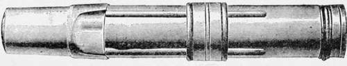
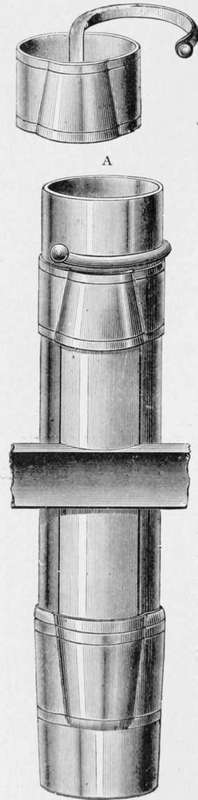
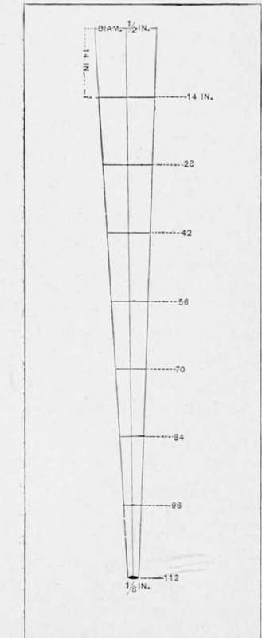
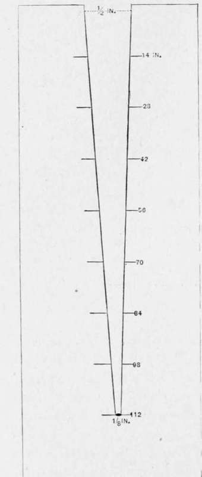

How To Make A Fishing Rod
Description
This section is from the book "American Game Fishes", by W. A. Perry. Also available from Amazon: American Game Fishes: Their Habits, Habitat, and Peculiarities; How, When, and Where to Angle for Them.
How To Make A Fishing Rod
In the following directions for the making of rods I shall purposely place myself in the position of a novice who has never made a rod, but has ingenuity and some mechanical aptitude. Machinery is rapidly taking the place of manual labor, and the various parts of most of the rods we see are made by that method. There is, however, great pleasure if not profit in the construction of the weapon with which you intend to slay the coming summer's monarch of the brook; and it will be all the more valued if its manufacture is completely your own-that is, as far as may be, for I do not think it advisable to describe the detail of ferrule and reel-plate making, when they can be bought so much easier than made. They can be obtained of any of the tackle-makers.
Fig. 17.
Perhaps the best rod for the novice to begin on will be a three-jointed, ten-foot lance-wood rly-rod. The difference between the make-up of a fine rod and one of inferior build, is great in effect as regards actual wear and tear, but in the manufacture there is little appreciable difference, on the principle that it is always nearly as easy to do good work as it is bad, and to make a fine fly-rod as one approximating to the so-called "pole" of our ancestors. As the tyro and myself intend to make the rod together, and as I imagine him to know absolutely nothing about rod-making, a word or two about tools are necessary:
These are neither elaborate nor expensive. First, it is desirable to have a good stout bench or table to work upon. It should also stand in a good light, and be of a height commensurate with that of the operator, so that he may incur as little fatigue as possible. A tired man at any task is seldom a minutely particular man, and it must be understood once and for all that eternal vigilance is the price of good rod-making. A vise is desirable also, but not absolutely necessary. One can generally resort to a neighboring carpenter's shop for any vise-work he has to do.
Fig. 18.
First of all you should get three or four-three at least, good planes. I prefer the Bailey iron planes-and so does every rod-maker of my acquaintance-and the sizes are those marked in the catalogue of the Stanley Rule and Level Co. as No. I, 6-inch; No. 5, 14-inch; and No. 50, 3 I-2-inch--the three costing in all about seven dollars. These are by far the easiest for the novice to manipulate and keep sharp.
Files of several degrees of cut, and wood-rasps, sand-paper, broken glass, and some pieces of an old saw-blade, make up the really indespensable tools. The material-lance-wood-can be procured of Chubb, and he is very particular in picking out good pieces.
The first thing to do, when one has decided to build anything- from a hog-pen to a railway bridge -is to get out a working plan of the task to be done. My own usage always has been to take a piece of sheet-brass or copper, and true the upper edge of it square. I then begin to think out the dimensions of the rod. Suppose we say ten feet long over all. The handle is to be ten inches, which, deducted from 122 inches (ten feet) leaves 112 of rod now to be made. How thick through should it be? Say, at the buttend, where it goes into the handle, half an inch, and at the extreme end of the tip we will render it one-eighth cf an inch (see fig. 19). How long shall each of the joints be? The first or butt, may be forty inches; the two others thirty-six each.
Fig. 19.
These dimensions being determined upon, I draw a perpendicular line down the brass or copper plate, with a sharp point of some kind, of almost any length. In the diagram it is four inches long. This represents 112 inches-the length of the rod. Now, across the upper end a line is drawn precisely equal to the diameter of the butt-end of the rod-in this case half an inch (see fig. 19), and at the lower end I draw another precisely equal to the diameter of the extremity of the rod or tip-in this case one-eighth of an inch. Now two lines drawn from the left and right extremities of the upper line to the left and right extremities of the lower line, represent a plan of the taper of the rod. Now take the compasses and divide this four-inch perpendicular into eight equal portions, each representing fourteen inches. Then draw straight lines right across at each intersection, and the length of each of these lines represents the actual thickness your rod should be at each section. Thus fourteen inches from the largest end the rod is to be seven-sixteenths of an inch; at twenty-eight inches six-sixteenths, and so on till, at the extremity, it is but two-sixteenths or one-eighth of an inch in diameter.
Fig. 20.
Having marked the plate precisely as shown in the diagram (fig. 19), and that very legibly, go to the next tin-smith and have him cut out the piece of marked diagram from the plate, reducing it to the appearance shown at fig. 20. You have in this simple device, a gauge of your rod from butt to point, and one of the chief difficulties is over. As you taper the wood under your hands you can bring it to gauge by passing it into the slit to its proper number. Thus at seventy inches in length it should be one-fourth-inch in diameter, and so on to the end.
The wood will come to us in square strips. Bore two holes right through the butt-end of each strip, so that when planing, the end can be slipped onto a pin driven into the table or bench (see fig. 21. A, pin; B B, holes;. You can then plane from you, and will find it much better than if the upper end were fixed against a stay. In the lat- ' ter case the wood (especially lance-wood) is apt to bend and get out of line owing to the pressure exerted upon it in pushing the plane.
Continue to:
- prev: The Fishing-Rod, And Its Amateur Manufacture. Part 3
- Table of Contents
- next: How To Make A Fishing Rod. Part 2